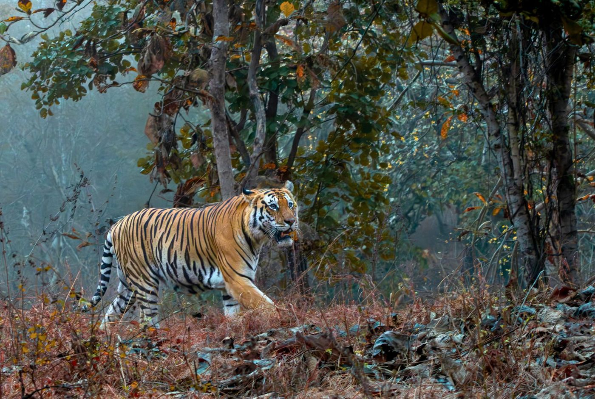
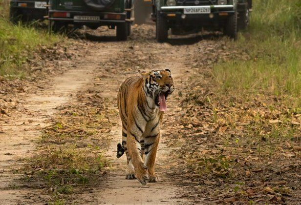
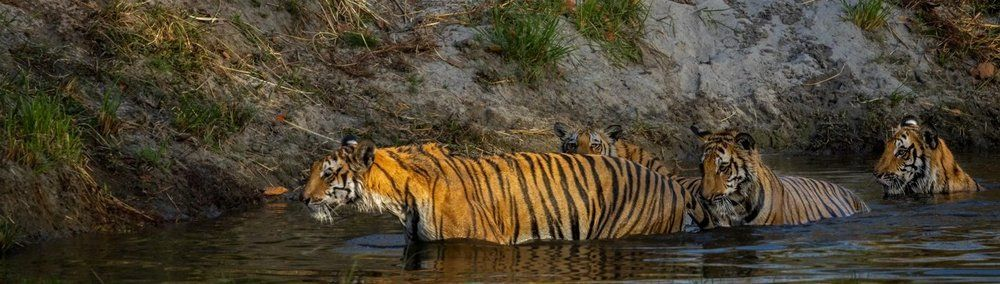
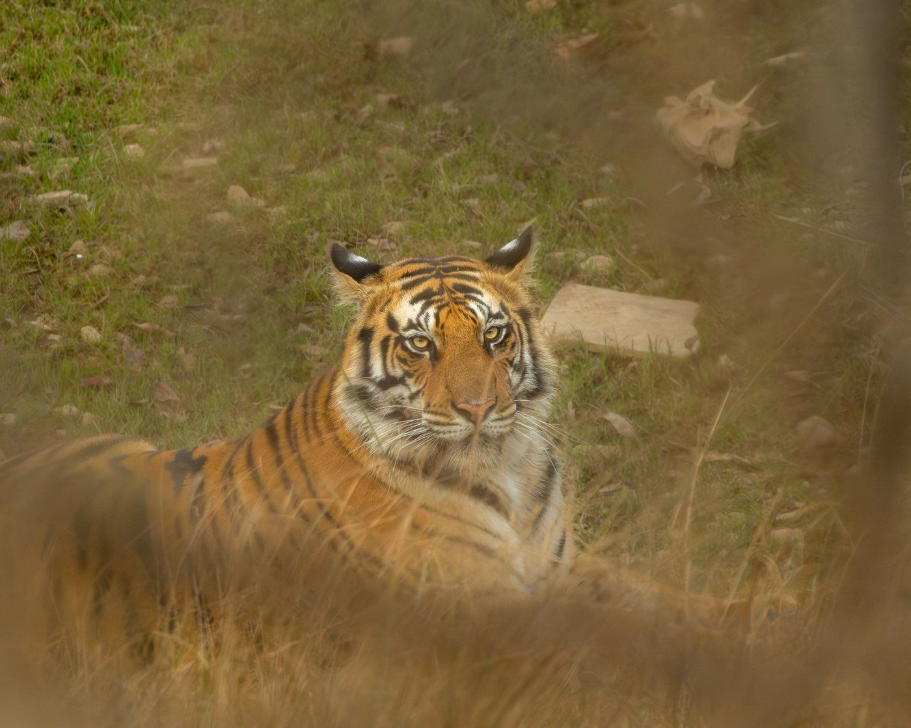
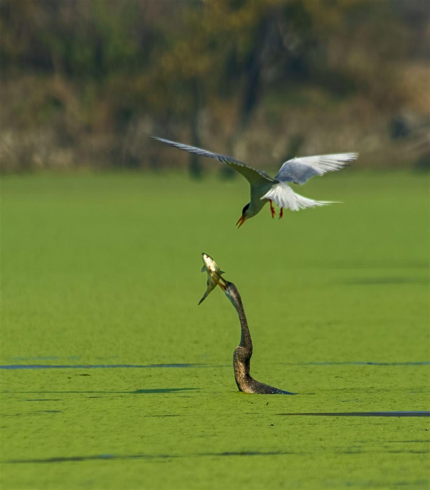
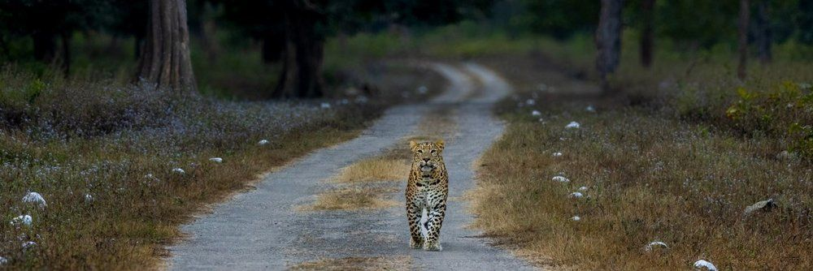
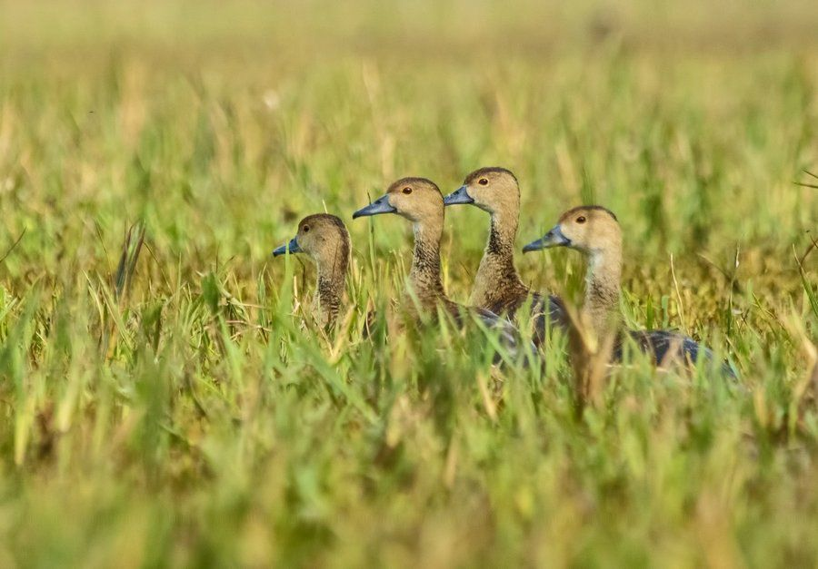
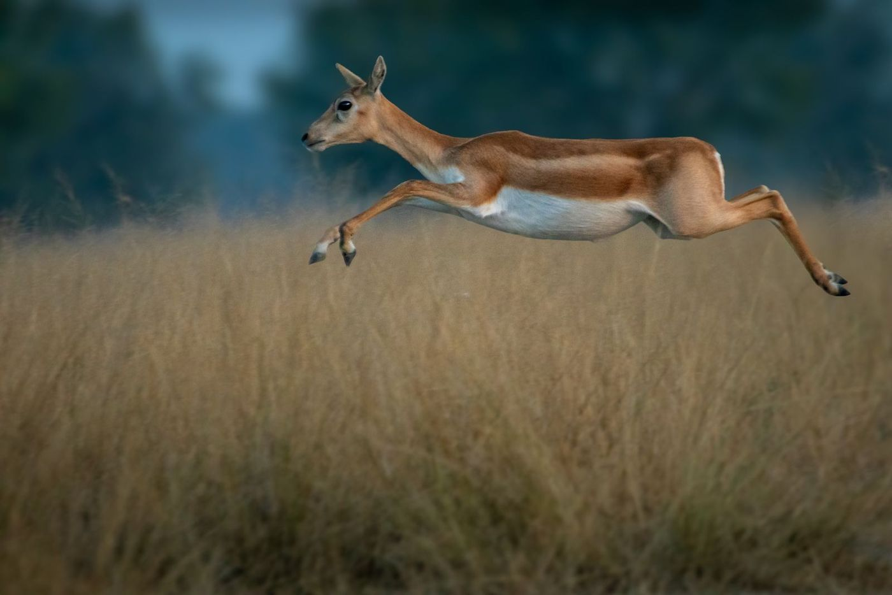

Free field guides
One lesson each, from real sightings across 14 years in the field. Save them once, read them offline in the park.

Start here
Reading the Signal Before the Move
Fieldcraft happens before the animal moves, not after.

Stop Looking for Tigers. Read the Jungle Instead.Alarm calls, sentinel behaviour, terrain and territory.FIELDCRAFT · 2 PAGES

When Tigers Actually MoveWhy golden hour isn’t the window that matters.FIELDCRAFT · 5 PAGES

The Family We Almost MissedTwo safaris with Beldanda and her cubs, Kishanpur.STORY · 7 PAGES

Focus Through ItClean autofocus through branches and grass.TECHNIQUE · 6 PAGES
S
3 Camera Settings for SunbirdsShutter, aperture and focus for the upside-down feed.SETTINGS · 2 PAGES

One Fish. Three Different Species Wanted It.The toss is your shutter cue.ACTION · 2 PAGES
R
I Underexposed Every Single One of These. On Purpose.The rim-light exposure rule, five langur frames.LIGHT · 2 PAGES
L
We Didn’t Move 10 Feet. The Light Did All the Work.Read the light instead of repositioning.LIGHT · 2 PAGES

Empty Space Is Not EmptyFour reserves, four species, one lesson on negative space.COMPOSITION · 6 PAGES

You Don’t Need More LensWhen the reach you already have is enough.COMPOSITION · 6 PAGES
₹
Your ₹2 Lakh Camera Won’t Fix This Mistake.Four questions to ask before you blame your gear.DECISIONS · 2 PAGES

I Used One Lens for 10 Years. Then I Switched.EF 100-400 L to RF 100-400: what actually mattered.GEAR · 2 PAGES
24
Start Your Own Local Species ListOne park and a reason to keep going back.FIELD GUIDE · 6 PAGES